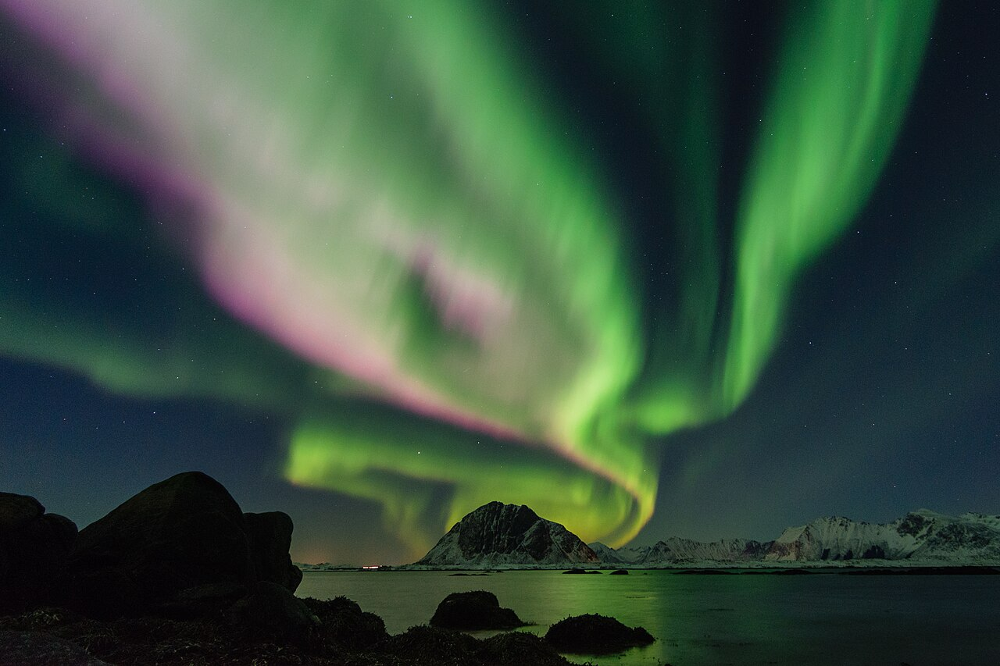
罗弗敦：海上山峰
这类“山直接从海里长出来”的北极圈景观，是本次最强的视觉回报。
基于你的已购机票、冰岛行程衔接、对象长途飞行后需要恢复、膝盖不适和每日驾驶不超过 6 小时的偏好，下面是几套更接近“浪漫、不虚此行”的挪威路线。
行程衔接：冰岛段在 9 月 30 日结束——两位同行人当天各自飞往自己的下一站，之后不再同行。你 10 月 1 日 15:55 从雷克雅未克（KEF）飞抵奥斯陆（OSL），与对象会合，从这里开始挪威段；因此 10/1 只安排晚餐与休息，不排景点。冰岛段的三个方案与清单见 冰岛总览。
10 月 1 日下午在奥斯陆机场会合，10 月 6 日下午从奥斯陆返程。真正可用的是 4 个整天，行程需要服务于体验质量，而不是城市数量。
最符合“国内少见的自然景观 + 浪漫 + 有极光机会”。高上限，也最吃天气和航班衔接。
最稳妥舒服，峡湾、铁路、游船都对膝盖友好；缺点是极光基本不用期待。
比纯追光更有白天内容，城市备胎强；自然冲击力略低于罗弗敦，但执行更省心。
如果你们愿意为更大的视觉回报接受天气不确定性，选罗弗敦。它即使没看到极光，也有海上尖峰、渔村、公路和秋季低光。
如果你们更想要一次低风险、舒服、完整的情侣旅行，选卑尔根 + 弗洛姆。它不是最刺激，但最不容易翻车。
分数是按你的偏好加权：独特风光、浪漫感、极光机会、舒适度、天气备胎和每日驾驶压力。
| 方案 | 自然独特性 | 极光机会 | 舒适度 | 驾驶压力 | 没极光时是否仍值得 | 主要风险 |
|---|---|---|---|---|---|---|
| 罗弗敦 3 晚 | 5/5 | 4/5 | 3/5 | 每日 2-5h，取决于基地 | 非常值得：海上山峰、渔村、海滩、公路本身就是主菜。 | 天气、航班衔接、E10 窄路和风雨。 |
| 卑尔根 + 弗洛姆 | 4/5 | 1/5 | 5/5 | 每日 0-4h，可火车/船替代 | 很值得：峡湾、铁路、游船和秋色稳定。 | 西部多雨，高山公路可能受天气影响。 |
| 特罗姆瑟 + 海岛 | 3.5/5 | 4.5/5 | 4/5 | 每日 1-4h，可少开 | 值得：城市、缆车、峡湾海岛、公路风景可兜底。 | 云量影响极光，十月北部可能早雪。 |
| 哈当厄尔 + 弗洛姆 | 3.5/5 | 1/5 | 4/5 | 每日 2-4h | 值得：果园、瀑布、峡湾秋色，情侣感强。 | 阴雨会削弱观景，震撼感略低于罗弗敦。 |
| 纯特罗姆瑟追光 | 3/5 | 5/5 | 4/5 | 可不自驾 | 中等：没极光时白天内容够，但自然厚度不如罗弗敦。 | 容易变成等天气；旅行记忆过度押注夜晚。 |
下面的图片已保存到本地，打开 HTML 时不再依赖远程图片加载。照片用于建立现场感；页面底部列出十月游记和官方来源，方便继续核对真实照片与运营状态。

这类“山直接从海里长出来”的北极圈景观，是本次最强的视觉回报。
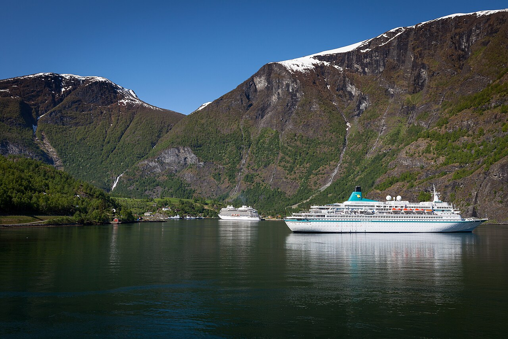
低徒步、低风险，可以靠游船和铁路获得完整体验。
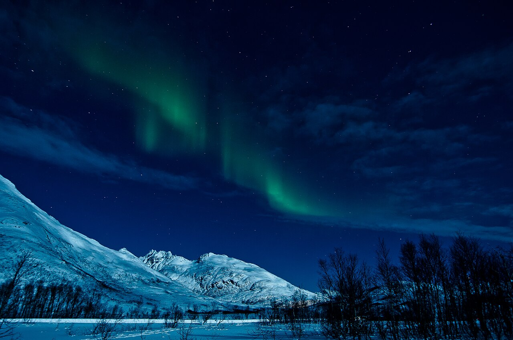
十月夜够黑，罗弗敦和特罗姆瑟都有机会，但必须接受云量不确定性。
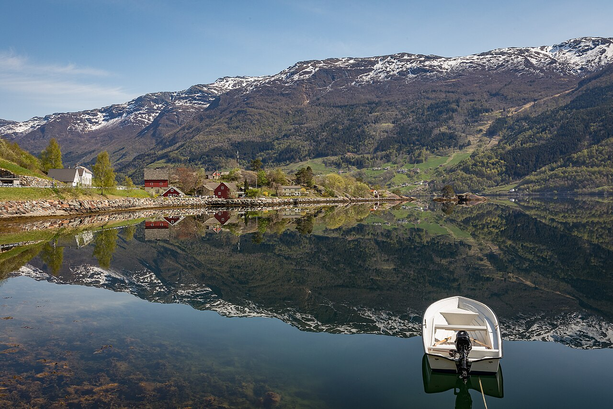
更适合轻松情侣自驾，强项是舒服、颜色和路上的停顿。
地图保留三种罗弗敦自驾选择：EVE 往返稳妥版、EVE 还车的“局部小环线 + E10 折返版”、以及 Moskenes-Bodø 单向退出版。罗弗敦地形是东西向岛链，西端深入 Reine / Å 后若仍回 EVE，无法做到真正全程不走回头路，只能靠北海岸、海滩和小镇支线减少重复感。
如果上方交互地图没有加载，这张示意图也能帮助你理解空间关系：Evenes 在东侧机场，推荐住宿在中部，10/3 向北部海滩展开，10/4 向西端经典渔村展开。
从东向西看，罗弗敦的节奏会越来越“野”：东部更适合补给和缓冲，中部最适合做基地，西部最像明信片但也最远。对你们来说，关键是把住宿放在中部，把西部作为一整天慢游。
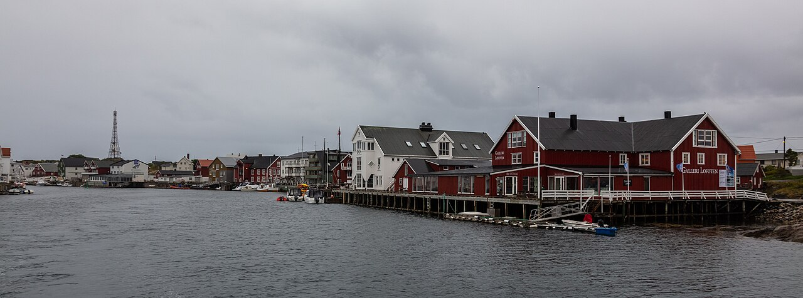
进岛后的第一个舒适区。适合超市、加油、咖啡、简单晚餐，也适合对象刚长途飞行后用来缓冲。缺点是离 Reine、Å 太远，住三晚会让西线日变成长距离往返。
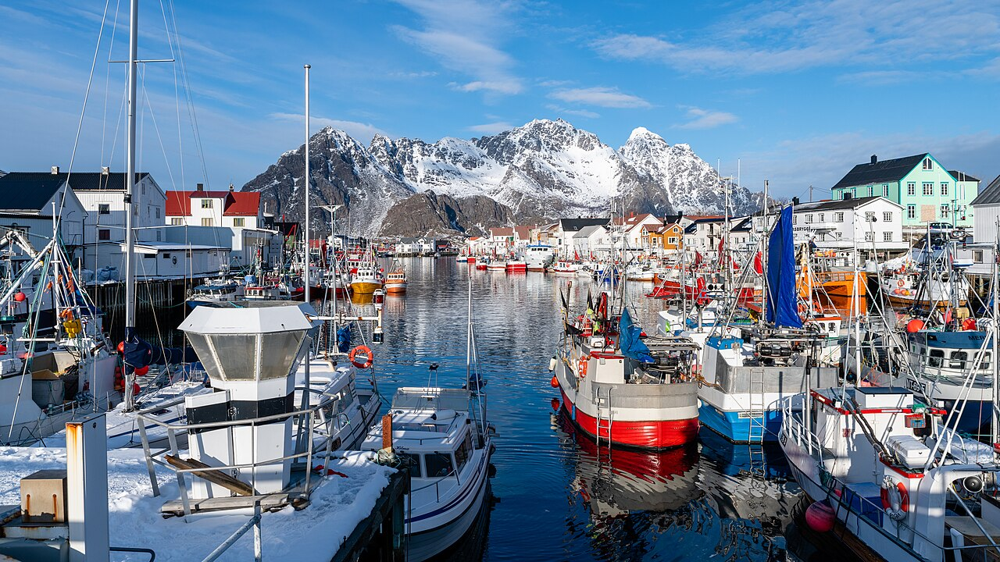
港口、画廊、咖啡馆和海边小路组合，最有“有人生活在北境”的浪漫感。适合住一晚体验小镇，但作为三晚基地偏东，去西线和北部海滩都会多绕。
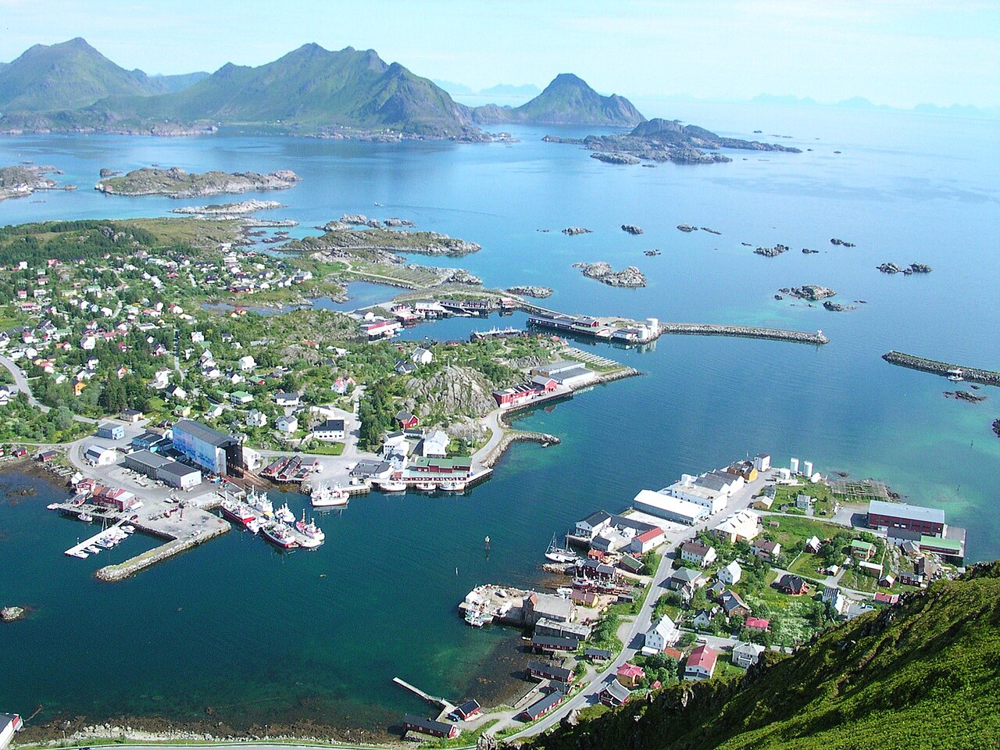
我最推荐的平衡点。它比 Leknes 更有渔村度假气质，又比 Reine/Hamnøy 更不压返程。适合订海景 rorbu 或带厨房的民宿，白天向东西两边辐射，晚上回到安静海湾。
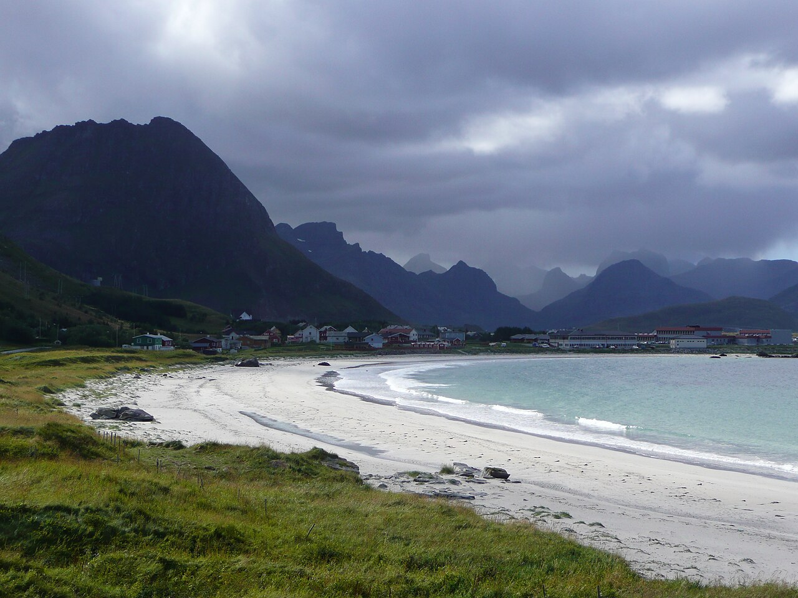
更靠近沙滩和西线，夜间看极光的空间感很好。适合你们想把“自然感”和“极光候选点”放在住宿体验里。代价是餐饮少一些，晚餐和早餐更依赖民宿厨房。
最实际的中部基地。超市、餐厅、加油、药店都更方便，遇到坏天气时改线成本低。缺点是镇本身不如 Ballstad、Henningsvær、Reine 有度假感。
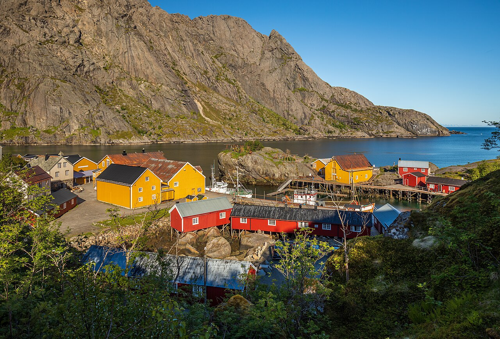
历史渔村氛围浓，适合拍照和慢逛，也适合把某一餐或下午茶安排在这里。住宿会更有记忆点，但位置略偏、选择少，作为三晚基地不如 Ballstad 灵活。
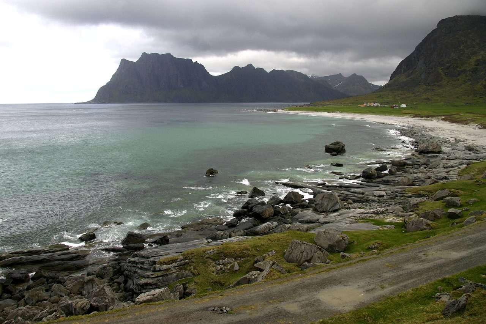
白沙滩、山体、海湾和北向视野都很强，是白天散步和夜间看极光都能兼顾的点。适合短步行，不需要爬山也有好景观。
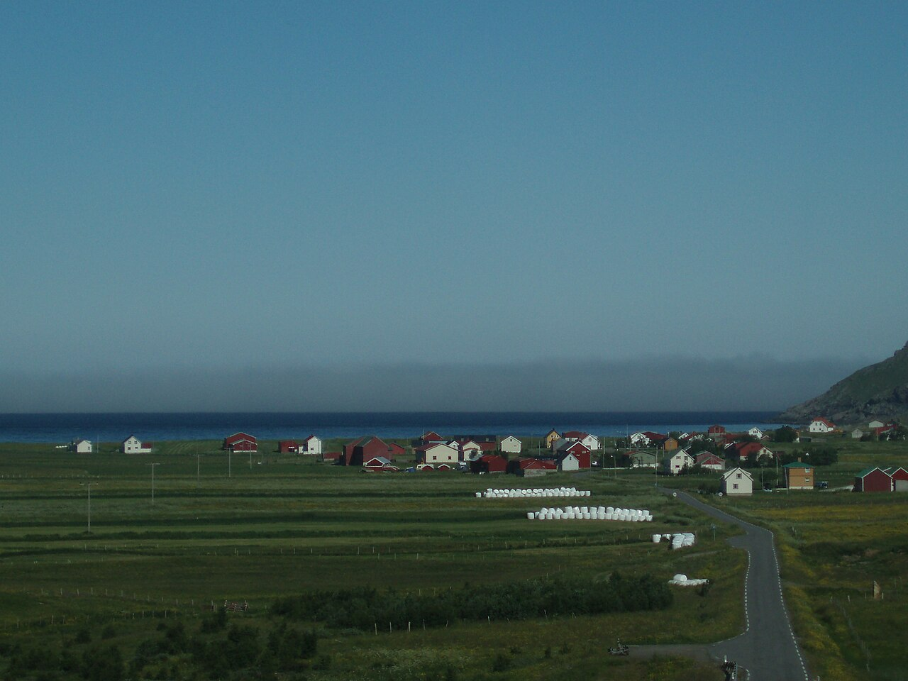
Unstad 是北极冲浪海滩，Eggum 更开阔安静。天气好时这里和冰岛的黑沙滩气质差异很明显：不是荒凉火山感，而是冷海、村落和山脊贴得很近。
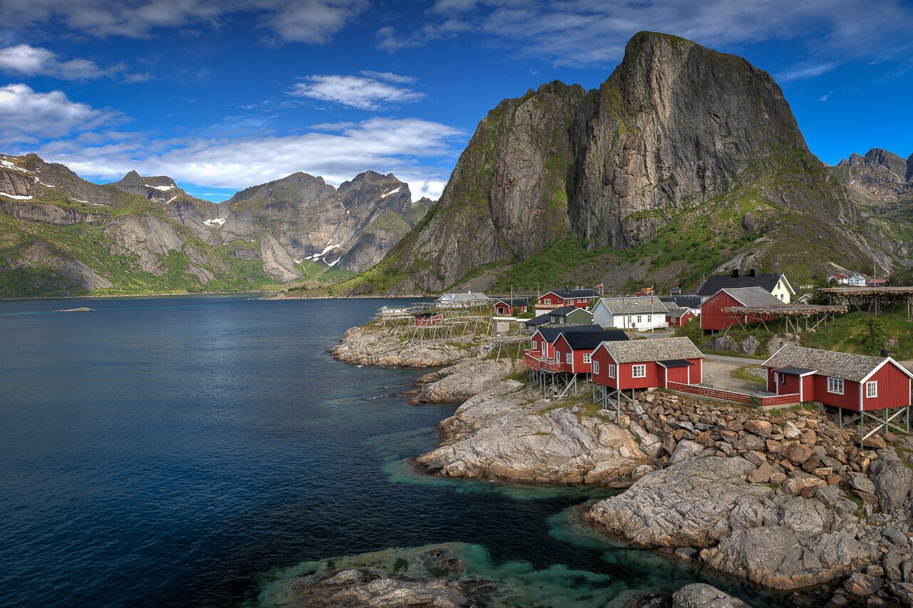
罗弗敦最经典、最“值回机票”的西线。山峰贴着海和红黄渔屋，是和冰岛差异最大的部分。缺点是离 Evenes 最远，所以适合做完整一日游，不适合最后一晚还住最西端再赶飞机。
按“你们这次最可能觉得不虚此行”的程度排序：先保留高差异化、低徒步、坏天气也有内容的点；长徒步只标为备选或远观。星级不是名气排名，而是结合十月天气、膝盖友好度、和冰岛行程后的差异化体验来排。
著名海上足球场在 Henningsvær 外侧小岛上，最好和港口、码头、咖啡馆一起慢逛。它和冰岛的荒原感完全不同，更像“人类把生活轻轻放在海和山之间”。
罗弗敦最经典的红黄渔屋、尖峰、桥和海湾组合。即使刚从冰岛来，这一天也很容易惊艳，因为冰岛强在火山地貌，罗弗敦强在“海上阿尔卑斯 + 渔村生活感”。
白天是白沙滩、山墙和冷蓝色海湾；夜晚如果北面晴朗，是很好的极光观测组合点。两处相距近，适合根据风向和云量灵活切换。
西线途中最适合“顺路多次停”的海滩组合。Skagsanden 是摄影和极光候选点，Ramberg 更开阔柔和，Flakstad Church 适合做雨天短停。
历史渔村体验比单纯观景更完整，适合安排午餐、咖啡或短逛。相比冰岛，它的重点不是自然荒野，而是老港口、木屋、码头和山海夹缝里的生活痕迹。
Eggum 是北向开阔地，适合极光；Unstad 是北极冲浪海滩，天气好时很有“世界边缘有人冲浪”的奇妙感。两处适合放在中北部海滩日。
Gimsøy 北向、开阔、光污染较少，适合从 Henningsvær 或 Svolvær 回中部时作为夜间极光候选。若天气白天好，也可安排海边散步或骑马体验。
如果遇到低云、连续雨或对象膝盖状态不好，这里是很实用的文化备胎。它不抢自然风景的主线，但能让坏天气日不只是困在车里。
Leknes 附近的短峰线，天气晴朗时回报高，但仍有上坡和湿滑风险。你们这次可以把它当“精神和膝盖状态都很好时的加菜”，不作为固定安排。
非常有名，但往返时间和坡度都不适合“膝盖不太好 + 十月天气不稳定 + 只在罗弗敦 3 晚”的组合。地图标注是为了识别位置，不建议压进核心行程。
名气极高，但台阶多、坡度集中，对膝盖不友好，十月湿滑时风险更高。你们完全可以在 Reine、Hamnøy、Sakrisøy 获得足够强的视觉回报，不需要靠爬它证明来过。
这是俯瞰 Henningsvær 的经典徒步视角，但路程和坡度对本次并不友好。更推荐把 Henningsvær 当作港口小镇散步点，足球场和码头已经足够有记忆点。
下面按你们的节奏排序。具体酒店/民宿是否有房、价格和取消政策需要以预订平台或官网为准；这里先用于判断“住在哪一段”最合理。
适合三晚连住。优点是浪漫、安静、停车容易、可做饭，去 Haukland/Uttakleiv 和 Reine 两边都不崩。可看 Hattvika Lodge、Solsiden Brygge 这类 Ballstad 海边住宿作风格参考。
适合想把极光和海滩放到住宿附近的人。白天去西线更轻松，晚上少开一段路就能到开阔海滩。缺点是餐饮选择少，最好提前采购。
适合重视便利、预算和天气弹性的人。它不是最美的住宿体验，但作为“操作基地”很好用：超市、餐厅、加油都近，坏天气时也更容易调整。
如果你们很想体验不同民宿，这是我认可的换住方案。第一晚住 Henningsvær，看港口和小店；后两晚移到 Ballstad/Napp，服务西线和极光。
最经典、最上镜，适合想要“醒来就在明信片里”的人。问题是远、贵、热门，且返程压力更大。若住这里，最好不要安排在 10/4 最后一晚。
适合航班晚到、天气差或不想当天开太久时使用。作为备用很有价值，但如果三晚都住这里，会把最精华的西线变成过长往返。
每套都按“10/1 不硬玩、每日驾驶不超过 6 小时、膝盖友好”设计。罗弗敦部分先给三种自驾版本并列比较；后面保留峡湾、特罗姆瑟和哈当厄尔作为备选方向。实际预订前，需要再核对 2026 年 10 月具体航班、船班和租车条款。
| 罗弗敦自驾版本 | 推荐度 | 回头路比例 | 疲劳度 | 天气 / 交通风险 | 住宿体验 | 结论 |
|---|---|---|---|---|---|---|
| A｜EVE 往返稳妥版 | 5/5 | 中等：西线当天往返或中部折返 | 最低，10/5 回机场最可控 | 低：不依赖车渡轮，不吃异地还车 | 适合 Ballstad / Napp / Leknes 连住，休息质量最好 | 我最推荐的落地执行版。对膝盖、天气、航班衔接最友好。 |
| B｜EVE 小环线 + E10 折返版 | 4.3/5 | 中低：支线少重复，主干仍必须折返 | 中等，换住宿会增加收拾行李成本 | 低到中：仍回 EVE，但末日距离更长 | 可体验东部、中部、西部不同民宿；更有推进感 | 想体验多种住宿时可选，但不要把它误解为真正闭环。 |
| C｜Moskenes-Bodø 单向版 | 4.1/5 | 最低：真正东进西出 | 视觉节奏最好，但 10/5 衔接压力最高 | 最高：车渡轮、海况、异地还车和 BOO 航班都要卡住 | 最适合最后一晚住 Reine / Hamnøy / Å | 确认船班和租车费用后才值得选；否则会把浪漫变成赶场。 |
这是我给你们的首选执行方案。它承认 E10 会有回头路，但把风险压到最低：不依赖 Moskenes-Bodø 车渡轮，不用承担异地还车，10/5 回 EVE 飞 Oslo 更稳。重点不是少开几公里，而是把风景最强的 10/3-10/4 留给白天慢玩。
如果你很想体验不同民宿，可以把 3 晚拆成“东部 1 晚 + 中部 1 晚 + 西部或中西部 1 晚”。它能减少审美重复，但地理上不能真正闭环：西端到 EVE 仍要沿 E10 往东返回。为了不超过每天 6 小时，最后一晚更建议住 Napp / Ramberg / Ballstad，不建议住 Å。
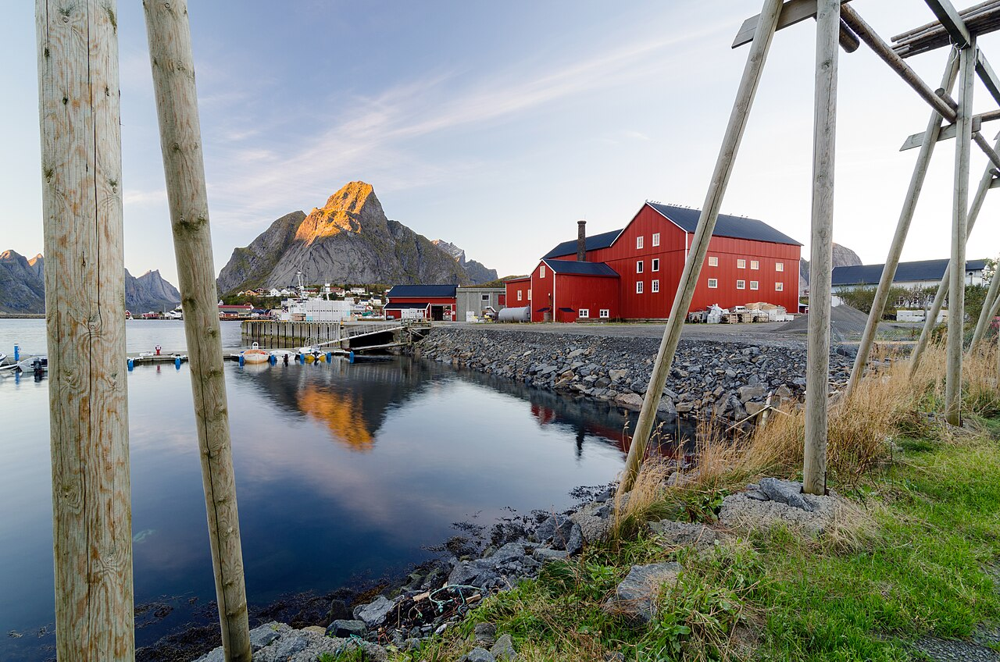
这是风景叙事最完整的版本：一路从东部生活感，推到中部海滩，再推到西部明信片渔村，最后从海上离开罗弗敦。它的美感很强，但执行风险也最高，尤其是 10 月海况、渡轮车位、异地还车费和 BOO-OSL 航班衔接。
适合把舒适度放第一位。峡湾游船、Flåm 铁路、Stegastein 观景台组成“几乎不用徒步”的挪威精华。
适合极光优先，但不想整趟旅行都在等天黑。白天靠 Kvaløya、Sommarøy、Ersfjordbotn 或缆车补足风景。
适合想要开车、停停走走、吃苹果酒和看瀑布的人。它没有极光，但很适合“舒服地沉浸在十月挪威”。
10/1 是双人会合和恢复日，10/6 是 16:05 从 OSL 起飞的返程日。奥斯陆不要当作“补景点”的地方，而要当作把北部行程接顺、让身体恢复、避免误机的缓冲城市。
对象 14:30 到 OSL，你 15:55 到 OSL；取行李、会合、入住后，不建议进市中心再赶行程。最稳是住 Gardermoen 机场附近，吃一顿热饭，散步 20-30 分钟，早点睡，为 10/2 飞 EVE 留体力。
如果两个人精神都不错，可以住 Oslo S / Bjørvika 一带。傍晚只走 Opera House 屋顶和海边步道，晚餐放在 Bjørvika、Aker Brygge 或 Grünerløkka，不再加博物馆和远距离移动。
如果 10/5 晚住 Oslo S 附近，10/6 上午最舒服：早餐后寄存行李或晚退房，走 Deichman Bjørvika、Opera House、Munch Museum 外观和海边步道，中午吃简餐，然后去机场。16:05 起飞，建议 13:00-13:30 到 OSL。
如果天气好、你们想看一点奥斯陆城市生活，可以去 Vigeland Park 轻松走一圈，再在 Frogner 附近喝咖啡。它比博物馆更自由，但从公园去机场要多一次城市交通衔接，所以时间必须保守。
十月初的关键不是“能不能去”，而是每天留出天气弹性。把强体验放上午和中午，夜晚只作为极光窗口，不作为唯一目标。
确认轮胎是否适合当时路况；挪威官方强调驾驶者全年都要确保车辆抓地力足够。
高山景观路只当加分项。若遇到雨雪、强风、临时关闭，宁可改为峡湾边低海拔路线。
北部路线要订至少 2-3 晚同一区域，增加遇到晴窗的概率；不要为了极光每天换城市。
这些链接用于复核季节、路况、船/铁路体验，以及查看十月实拍游记。预订前请以官方页面的 2026 年实时班次为准。